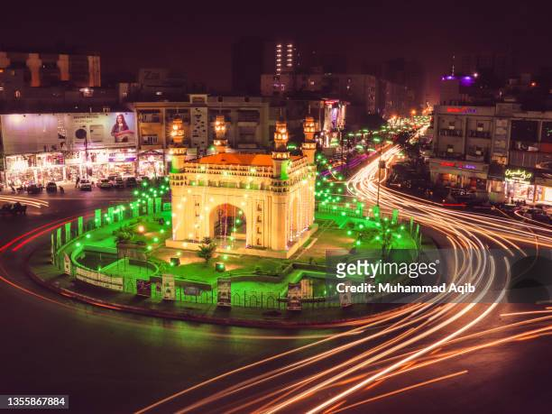
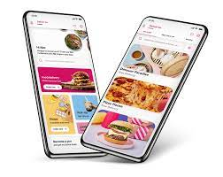

List your restaurant or shop on
Would you like millions of new customers to enjoy your amazing food and groceries? So would we!
It's simple: we list your menu and product lists online, help you process orders, pick them up, and deliver them to hungry pandas – in a heartbeat!
Interested? Let's start our partnership today!. .
GET STARTED
Order food from the best restaurants with foodpanda pakistan
Are you hungry? Did you have a long and stressful day? Interested in getting a cheesy pizza delivered to your home or office? Then foodpanda Pakistan is the right destination for you! foodpanda offers you a long and detailed list of the best restaurants and local favourites near you to help satisfy your hunger through our online food delivery service. Cuisines are diverse: whether you fancy a juicy burger from Takeout, fresh sushi from Samdado or peri peri chicken from Nando's, foodpanda Bangladesh has a wide range of 2000+ restaurants available from Dhaka, to Chittagong through to Sylhet. From a healthy lunch to evening snacks to a hearty dinner, foodpanda provides you with the means to satisfy your cravings throughout the day. Sit back and relax - let foodpanda
Cities
Find us in your city

karachi
Lahore
Multan
Sukkur
App
Put us in your pocket
Download the food you love
It's all at your fingertips -- the restaurants you love. Find the right food to suit
mood, and make the first bite last. Go ahead, download us.

Office
Take your office out to lunch
foodpanda for businessOrder lunch, fuel for meetings or late-night deliveries to the office.
Your favorite restaurants coming to a desk near you.
GET STARTED
Order food from the best restaurants with foodpanda pakistan
Are you hungry? Did you have a long and stressful day? Interested in getting a cheesy pizza delivered to your home or office? Then foodpanda Pakistan is the right destination for you! foodpanda offers you a long and detailed list of the best restaurants and local favourites near you to help satisfy your hunger through our online food delivery service. Cuisines are diverse: whether you fancy a juicy burger from Takeout, fresh sushi from Samdado or peri peri chicken from Nando's, foodpanda Bangladesh has a wide range of 2000+ restaurants available from Dhaka, to Chittagong through to Sylhet. From a healthy lunch to evening snacks to a hearty dinner, foodpanda provides you with the means to satisfy your cravings throughout the day. Sit back and relax - let foodpanda
Want vouchers and the latest news from our restaurants?
GET OUR WEEKLY EMAIL:
Order food and groceries online from the best restaurants and shops on foodpanda
Are you hungry?
Order food and groceries online from the best restaurants and shops on foodpanda
Are you hungry?
Did you have a long and stressful day?
Interested in getting a cheesy pizza delivered to your office or looking to avoid the weekly shop? Then foodpanda Pakistan is the right destination for you! foodpanda offers you a long and detailed list of the best restaurants and shops near you to help make your every day easier.
What's new?
✓ Wide variety of restaurants and shops, an abundance of cuisines & products.
✓ High quality delivery service.
✓ Live chat feature to give App users instant help when they need it.
✓ NEW: foodpanda grocery delivery! Discover the best shops, pharmacies, bakeries and more near you.
Frequently Asked Questions
How can I get foodpanda delivery?
To get foodpanda delivery, simply locate the restaurants and shops near you by typing in your address, browse through a variety of restaurants and cuisines, check menus and prices, choose your dishes and add them to the basket. Now you only need to checkout and make the payment. Soon your delicious food will arrive at your doorstep!
Which takeout restaurants open now near me?
You can check which takeout restaurants are open now near you by simply typing your address in the location bar on foodpanda and pressing search. You will see all the available restaurants and shops that deliver to your area.
Does foodpanda deliver 24 hours?
Yes, foodpanda in Pakistan delivers 24 hours. However, many restaurants may be unavailable for a late-night delivery. Please check which places in Pakistan deliver to you within 24 hours by using your address. You can also order groceries 24 hours a day via pandamart.
Can you pay cash for foodpanda?
Yes, you can pay cash on delivery for foodpanda in Pakistan.
How can I pay foodpanda online?
You can pay online while ordering at foodpanda Pakistan by using a credit or debit card or PayPal.
Can I order foodpanda for someone else?
Yes, foodpanda Pakistan allows you to place an order for someone else. During checkout, just update the name and delivery address of the person you're ordering for. Please keep in mind that if the delivery details are not correct and the order cannot be delivered, we won't be able to process a refund.
How much does foodpanda charge for delivery?
Delivery fee charged by foodpanda in Pakistan depends on many operational factors, most of all - location and the restaurant you are ordering from. You can always check the delivery fee while forming your order. Besides, you can filter the restaurants by clicking on the "Free Delivery" icon at the top of your restaurant listing.
What restaurants let you order online?
There are hundreds of restaurants on foodpanda Pakistan that let you order online. For example, KFC, McDonald's, Pizza Hut, OPTP, Hardee's, Domino's, Kababjees and many-many more! In order to check all the restaurants near you that deliver, just type in your address and discover all the available places.
Does foodpanda have minimum order?
Yes, many restaurants have a minimum order. The minimum order value depends on the restaurant you order from and is indicated during your ordering process.
What is the difference between delivery and Pick-Up?
If you choose delivery, a foodpanda rider will collect your order from the restaurant and take it to your chosen delivery address. If you choose Pick-Up, you can takeaway your food directly from the restaurant for extra savings – and to jump to the front of the queue. Pick-Up orders are available for restaurants only.
Order food and groceries online with foodpanda now and enjoy a great dining experience! Did you have a long and stressful day? Interested in getting a cheesy pizza delivered to your office or looking to avoid the weekly shop? Then foodpanda Pakistan is the right destination for you! foodpanda offers you a long and detailed list of the best restaurants and shops near you to help make your every day easier.
What's new?
✓ Wide variety of restaurants and shops, an abundance of cuisines & products.
✓ High quality delivery service.
✓ Live chat feature to give App users instant help when they need it.
✓ NEW: foodpanda grocery delivery! Discover the best shops, pharmacies, bakeries and more near you.
Frequently Asked Questions
How can I get foodpanda delivery?
To get foodpanda delivery, simply locate the restaurants and shops near you by typing in your address, browse through a variety of restaurants and cuisines, check menus and prices, choose your dishes and add them to the basket. Now you only need to checkout and make the payment. Soon your delicious food will arrive at your doorstep!
Which takeout restaurants open now near me?
You can check which takeout restaurants are open now near you by simply typing your address in the location bar on foodpanda and pressing search. You will see all the available restaurants and shops that deliver to your area.
Does foodpanda deliver 24 hours?
Yes, foodpanda in Pakistan delivers 24 hours. However, many restaurants may be unavailable for a late-night delivery. Please check which places in Pakistan deliver to you within 24 hours by using your address. You can also order groceries 24 hours a day via pandamart.
Can you pay cash for foodpanda?
Yes, you can pay cash on delivery for foodpanda in Pakistan.
How can I pay foodpanda online?
You can pay online while ordering at foodpanda Pakistan by using a credit or debit card or PayPal.
Can I order foodpanda for someone else?
Yes, foodpanda Pakistan allows you to place an order for someone else. During checkout, just update the name and delivery address of the person you're ordering for. Please keep in mind that if the delivery details are not correct and the order cannot be delivered, we won't be able to process a refund.
How much does foodpanda charge for delivery?
Delivery fee charged by foodpanda in Pakistan depends on many operational factors, most of all - location and the restaurant you are ordering from. You can always check the delivery fee while forming your order. Besides, you can filter the restaurants by clicking on the "Free Delivery" icon at the top of your restaurant listing.
What restaurants let you order online?
There are hundreds of restaurants on foodpanda Pakistan that let you order online. For example, KFC, McDonald's, Pizza Hut, OPTP, Hardee's, Domino's, Kababjees and many-many more! In order to check all the restaurants near you that deliver, just type in your address and discover all the available places.
Does foodpanda have minimum order?
Yes, many restaurants have a minimum order. The minimum order value depends on the restaurant you order from and is indicated during your ordering process.
What is the difference between delivery and Pick-Up?
If you choose delivery, a foodpanda rider will collect your order from the restaurant and take it to your chosen delivery address. If you choose Pick-Up, you can takeaway your food directly from the restaurant for extra savings – and to jump to the front of the queue. Pick-Up orders are available for restaurants only.
Order food and groceries online with foodpanda now and enjoy a great dining experience!